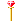

TEL'ARIN & TEL'ELENON
비밀 지하 수로 (스테이지 9-C) 보스 '텔'아린', '텔'엘레논' |
기본 정보
픽 포켓으로 얻을 수 있는 아이템
텔'아린
클리어 시간 측정의 시작 시점
플레이어가 움직일 수 있을 때 부터 최단 시간 클리어 기록
드워프 4:49 |
|||||||||
드랍 가능한 아이템 - 돈 + 점수 아이템 + 그외 아이템의 구성으로 떨어진다.
돈 : 5sp x3 + 1spx3 (18sp) / 10sp x5 (50sp) / 50sp x3 (150sp) / 100sp x2 (200sp) / 500sp x1 (500sp)
기타 :  스크롤(scroll) 최대 8레벨
스크롤(scroll) 최대 8레벨
| 점수 아이템 : | |
| 반지류 : | |
| 도구류 : | |
| 완드류 : | |
| 장비류 : |  |
초반에 나왔던 그 텔'아린이 플레이어들을 도와줬던 인물과 함께 등장한다. 두명이 똑같은 능력을 가지고 있기 때문에 상당히 까다로운 싸움이 되며 특히 동시에 헤이스트를 시전했다면 정말 정신 없어진다.
헤이스트를 쓰기 전에 끝내지 못했다면 끔찍한 경험을 하게 될 것이다.
헤이스트를 쓰기 전에 끝내지 못했다면 끔찍한 경험을 하게 될 것이다.
시작 전 대사
"하하하, 그래 결국 다시 만나게 됐군......"
이 대사가 끝난 후 바로 싸움이 시작 된다.
텔 엘레논의 HP와 경험치
텔'엘레논의 HP는 텔'아린 보다 적으며 화면상에 표시되지 않는다.
텔'아린을 물리치기 전에 텔'엘레논을 물리쳤다면 물리친 플레이어는 55000xp를 얻는다.
텔'아린만 물리쳤다면 텔'엘레논은 어디론가 사라져 버리고 경험치는 얻지 못한다. 대신 나중에 나그파(Nagpa)와의 싸움을 넘길 수 있다 (그러나 레벨이 안오른다는 단점이 있다.)
텔'아린을 물리치기 전에 텔'엘레논을 물리쳤다면 물리친 플레이어는 55000xp를 얻는다.
텔'아린만 물리쳤다면 텔'엘레논은 어디론가 사라져 버리고 경험치는 얻지 못한다. 대신 나중에 나그파(Nagpa)와의 싸움을 넘길 수 있다 (그러나 레벨이 안오른다는 단점이 있다.)
패턴 분석
| 텔'아린이나 텔'엘레론이나 패턴은 똑같다. 초반의 텔'아린과 비교해서 스켈레톤 소환을 하지 않는다는 점을 빼면 다를게 없으나 '두명'이라는 점 때문에 난이도는 배 이상으로 올라가게 된다. ※ 붉은색은 파이터가 입는 데미지, 푸른색은 매직 유저가 입는 데미지. 클레릭/드워프는 파이터에 가까운 데미지를, 시프/엘프는 매직 유저에 가까운 데미지를 입는다. ※ 금색 이름의 공격을 하는 도중에는 D키를 쓸 수 없다. |
|
| 찌르기 (23/34) | |
 |
장검으로 찌르는 공격이다. 그림에서 보는대로 리치가 상당히 길며 특히나 공간이 작은 스테이지라서 방심하다가 맞을 수 있다. 또한 가까운 거리에서 가드를 시도 했을 경우 긴 장검의 판정이 방패를 뚫고 공격이 들어오기 때문에 가드를 하고자 하면 약간 거리를 둬야 한다. 이 점은 특히 텔'아린이 헤이스트를 썼을 때 가드로 대응 할 경우 명심해야 할 부분이다. |
| 베기 (24/36) | |
| 위에서 아래로 세로배기를 하는 공격이다. 그만큼 리치는 좀 짧으나 대신 판정이 위아래로 좀 더 넓다. 그림차 치기 위치에 있을 때 찌르기는 맞지 않아도 이 공격은 맞을 수 있다는 뜻이다. | |
| 전진 베기 (22/32) | |
 |
파이터의 슬래쉬와 비슷한 모션을 가지고 있는 공격. 앞으로 전진을 하면서 가로 배기를 한다. 가깝게 붙었을 때 발동하며 꽤 빠르기 때문에 근접 공격을 예상하고 있다가 맞을 수도 있다. 또한 그림자 치기 위치에 있더라도 맞을 수 있을 만큼 판정도 꽤 넓으며 플레이어의 공격을 텔'아린이 가드 했을 때 플레이어가 가까이 있다면 카운터 공격으로 발동된다. |
| 점프 베기 (22/32) | |
| 점프를 하면서 장검을 내려친다. 거리가 떨어져 있을 때 주로 날아오는 공격으로 낮게 점프 할 때도 있고 높게 점프 할 때도 있는데 체공시간이 길기 때문에 피하기 쉬운 편이며 오히려 반격의 기회가 될 수도 있다. 다만 근접 공격 2의 경우처럼 위아래로 판정이 넓고 그 뿐만이 아니라 뒤쪽까지 판정이 형성되기 때문에 어정쩡하게 그림자 치기를 유지하거나 너무 급하게 뒤에서 접근하면 맞을 수 있다. |
|
| 라이트닝 볼트 (29/41) | |
 |
라이트닝 볼트를 일직선으로 시전한다. 먼거리에서 텔'아린과 플레이어가 일직선상에 있을 때 시전하며 준비동작이 눈에 뻔히 보이고 또한 시전 중엔 무방비 상태이기 때문에 피하기도 쉽고 빈틈을 노리기도 쉽다. 그대신 준비동작과 시전동작 초기에 약간의 무적시간이 있다. 다만 헤이스트가 걸린 상태라면 빈틈이 거의 사라지기 때문에 주의. 주문이니 만큼 주문 무효화 반지가 있다면 피해를 입지 않는다. |
| 파이어 볼 (25/38) | |
 |
파이어 볼을 일직선으로 시전한다. 마찬가지로 준비동작과 시전동작 초기에 약간의 무적시간이 있다. 라이트닝 볼트에 비해 시전시간이 짧기 때문에 빈틈을 노리기가 조금 더 힘들며 또한 파이어 볼이 날아가다가 지면에 닿으면 폭발하기 때문에 피하려면 좀 더 확실하게 피해야 한다. 당연히 불 내성의 반지와 주문 무효화 반지가 있다면 피해를 입지 않는다. |
| 백점프 | |
 |
간혹 접근을 하면 뒤쪽으로 훌쩍 뛰면서 회피를 한다. 그런데 체공시간이 길어서 충분히 쫓아갈 시간이 된다. 빈틈 투성이 이므로 공격을 성공시킬 좋은 기회가 된다. |
| ※ 헤이스트 | |
| HP가 일정량 이하로 떨어지면 헤이스트를 시전한다. 모든 행동이 빨라지며 플레이어의 반응속도와 캐릭터의 움직임이 그 속도를 따라가기 힘들기 때문에 가뜩이나 좁은 스테이지에서 상당히 고생할 수 밖에 없다. 약간 빨라지는 헤이스트와 상당히 빨라지는 헤이스트 두가지가 있는데 어느쪽이 발동될지는 무작위이며 시전 행동에는 차이가 없어서 움직이기 전까지는 알아볼 수 없다. 당연히 상당히 빠른 헤이스트가 발동되면 그만큼 더 힘들어진다. 또한 당연한 이야기지만 가장 좋은 방법은 헤이스트가 발동되기 전에 끝내는 것 이다. 헤이스트의 지속효과는 약 17초 가량이다. |
|
※ 헤이스트가 발동되는 시점
1인 플레이시 : 총 3번 이상 쓰러졌다가 일어난 상태에서 전체 HP의 60% 이상이 소모 됐을 때.
그 후로 3번 쓰러졌다가 일어날 때 마다 발동.
| 실제 HP |
2인 플레이시 : 총 2번 이상 쓰러졌다가 일어난 상태에서 전체 HP의 60% 이상이 소모 됐을 때.
그 후로 2번 쓰러졌다가 일어날 때 마다 발동.
| 실제 HP |
3~4인 플레이시 : HP에 상관없이 두번 쓰러졌다가 일어날 때 마다.
LB오일 투척 위치

상자
위 스샷에서 보다시피 이곳에는 상자가 두개 있다.
왼쪽의 경우 랜덤 아이템은 반 정도의 확률로 진 소환의 반지가 나오거나 아무것도 안나온다. 공통 아이템의 경우 건틀렛이 나오며 클래스 별 아이템은 파이터, 클레릭, 시프, 드워프의 경우 라이트닝 볼트 반지가 나오고 매직 유저의 경우 은단검, 엘프의 경우 은화살이 나온다.
오른쪽의 경우 랜덤 아이템은 나오지 않으며 공통 아이템은 슈퍼 힐링 포션이 나오며 클래스 별 아이템은 파이터, 클레릭, 드워프의 경우 스피드 포션이 나오며 시프, 매직 유저, 엘프의 경우 힘의 포션이 나온다.
나오는 아이템들이 쓸만하기도 하지만 싸우다 보면 상당히 걸치적 거리는 경우가 있다. 그러니 기회가 있다면 미리 열어두는게 좋다.
왼쪽의 경우 랜덤 아이템은 반 정도의 확률로 진 소환의 반지가 나오거나 아무것도 안나온다. 공통 아이템의 경우 건틀렛이 나오며 클래스 별 아이템은 파이터, 클레릭, 시프, 드워프의 경우 라이트닝 볼트 반지가 나오고 매직 유저의 경우 은단검, 엘프의 경우 은화살이 나온다.
오른쪽의 경우 랜덤 아이템은 나오지 않으며 공통 아이템은 슈퍼 힐링 포션이 나오며 클래스 별 아이템은 파이터, 클레릭, 드워프의 경우 스피드 포션이 나오며 시프, 매직 유저, 엘프의 경우 힘의 포션이 나온다.
나오는 아이템들이 쓸만하기도 하지만 싸우다 보면 상당히 걸치적 거리는 경우가 있다. 그러니 기회가 있다면 미리 열어두는게 좋다.